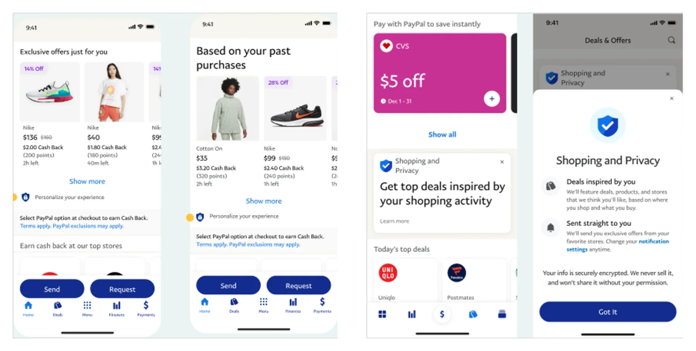
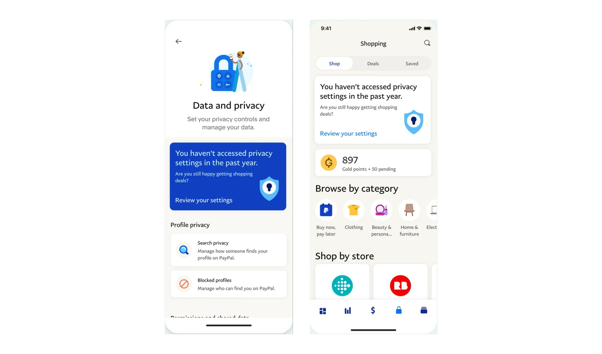

Experiment · PayPal Privacy case · 2026-11-18
What other privacy case studies do, and what ours should take
Six public pieces on privacy settings and ad controls (Meta, Facebook, Google, an earlier PayPal settings redesign, a CHI 2023 study, a GDPR design report), read in full and set against the Privacy case as it is now. Ranked by how much each one would change what a hiring manager takes away. Nothing on the site has changed yet.
Blue is proposed. [X] is something only you can supply; nothing about your work is invented.
What was read
Six sources, and how close each is to your case
No public case study shows a full Google or Facebook privacy redesign with process, screens and numbers together. The design-led ones are summaries or visuals; the deep ones are research.
Kian Lavi, 2021. One place to learn and manage privacy across Facebook, Instagram, WhatsApp. Framed by real worries in people's words; "Guides" pair explanation with the control; success measured by trust and agency, not growth.
Charlie Deets, 2014. "A design failure if we have to send someone to a settings page": controls come to you in the moment. Protective defaults (Friends, not Public). The first Privacy Checkup.
Im, Cranor, Schaub et al., CHI 2023. Facebook ad settings tested with 110 people. Findability depends on the entry point and on links straight to the setting; that raised findability by up to 41%. Warns against minimalism that hides controls.
Eric Tomlinson, lead designer, 2016–18 (the page now 404s; read via search). No IA, and GDPR needed privacy settings easy to find. Built GDPR features as one flexible pattern so engineers didn't recode them per screen.
Superbloom for Berkeley CLTC, 2023. Teams discuss GDPR in legal language, not in usable screens. Withdrawing consent should be as easy as giving it (Art. 7(3)).
Alex Wright (Results About You, one-paragraph summary), Zuheng Yin (visual system, no UX reasoning), Shubhangi Gupta (research, findings confidential). Thin on decisions; used only where noted.
The comparison
Every lesson, against the case as it is, most relevant first
"Apply" changes the page. "Say it" is for the interview, not the page. "Have it" means the case already does this, often better than the source. "Skip" has a reason.
| # | Lesson | From | Our case now | Proposed | Where | Verdict |
|---|---|---|---|---|---|---|
| Change the page | ||||||
| 01 | Show the law turning into screensEach rule, then the exact thing on screen that meets it. | Policy to Pixels; Tomlinson (GDPR as one pattern) | The GDPR and CCPA side is three needs in words ("Honour requests to see or delete data"). The screens that meet them come much later, apart. | A "rule → on screen" map in the situation, seven rows, each with a thumbnail: access → Download your data; rectification → "Update your data"; erasure → Clean up your data; what must be kept → the one line on the delete screen; and so on. | The situation, replacing the law card's list | Apply |
| 02 | Draw the pattern every setting followsThe five questions as a template, on one real setting. | Tomlinson (one GDPR pattern); Meta "Guides" (explanation + control together) | "Each setting answered five questions…" is one sentence of prose in The hard call. | The Deals & ads screen beside five numbered slots: what we collect, where from, why, shared or not, what you control. Filled from the case where it's known, [X] where not. | The hard call, after the first prose block | Apply |
| 03 | Settings come to peopleLead the craft with privacy in the moment, then the yearly checkup. | Deets (Facebook); CHI 2023 (entry points in the feed and in ads) | Contextual privacy is a two-line point in How the work got made, and the last screens of The craft. The yearly reminder appears only in captions as "a later proposal". | One beat of its own at the start of The craft: "Most privacy questions start somewhere else." The offer's "Personalize your experience" link and the Shopping and Privacy card, then the yearly reminder as the settings coming to you. | The craft, first; the point leaves How the work got made | Apply |
| 04 | Say why this is the measurePrivacy isn't a growth metric; name what you measured instead. | Lavi (Meta: "couldn't be growth-hacked") | Impact is three numbers with no line on why calls are the measure. | One line above the numbers tying them to the situation: customer service heard the same questions again and again, so the measure was whether people still needed to ask. | Impact, above the metrics | Apply |
| 05 | Open on people's real questionsThe top questions customer service heard, word for word. | Lavi ("I'm freaked out by a creepy ad…") | One research quote and one summarised question ("What is PayPal doing with my data…"). | The three most common privacy calls, in customers' words, before the bet. Only if you have them: [X] ×3. | The situation, the People card | Apply if real |
| Say it, don't print it | ||||||
| 06 | Findability is entry point × actionabilityYour 2 → 1 taps is the same finding a CHI study made two years later. | CHI 2023: links straight to a setting raised findability up to 41%; "caution against minimalism that hides controls" | The hard call explains dropping the sheets in your own terms. | Keep the page as is. In an interview: "We dropped the extra layer for the same reason the CMU study found: every hop to a setting costs people who are already worried." | Interview | Say it |
| 07 | Protective defaultsFacebook started everyone at Friends, not Public. | Deets (Facebook) | Your Ads consent case flipped sharing to opt-in; the Privacy case doesn't point to it. | Optional: Privacy's "Next" goes to Ads consent instead of Scan & Go, so the two privacy cases read as one body of work. | The case's next link | Your call |
| Already doing, keep | ||||||
| 08 | Explanation sits beside the control | Meta Guides | "Learn how it works" beside the switch; "We never sell your personal information." | No change. Yours does it in one line, theirs in a separate Guide. | The craft | Have it |
| 09 | Evidence over adjectives | All of them, by absence | Before/after on one phone, the funnel, the 70% bar, findings beside fixes. | No change. None of the six shows a before and after; this is where yours is already ahead. | Throughout | Have it |
| 10 | An honest reflection | Lavi ("more champions, fewer cooks") | "Test the words with the groups"; "go rougher". | No change. Lavi's is about team politics; yours is about craft, which suits the IC ask better. | What I'd do differently | Have it |
| Skip | ||||||
| 11 | Visual metaphors for data | Zuheng Yin (My Ad Center) | — | Frosted glass and objects for data types are decoration; the brief rules that out. | — | Skip |
| 12 | Stories format, dashboard in the feed | Lavi; CHI 2023 | — | Not what you shipped. The CHI study also found the feed dashboard felt intrusive. | — | Skip |
| 13 | Methods and impact without the findings | Gupta (Google Ads, confidential) | — | Not for Privacy, which can show its findings. Worth a look for the locked Okta case. | Okta, later | Elsewhere |
Show the law turning into screens
The case says it met GDPR and CCPA "on the same screens", but never shows which screen meets which rule. A hiring manager for a fintech or identity role reads this map as proof you can sit with legal and come out with a usable product. It's the senior skill in this case, and right now it's told, not shown.
From: Policy to Pixels (legal language never reaches the screen) · Tomlinson (GDPR built as one pattern)
What is PayPal doing with my data, and how do I change it?
- Find any setting from the privacy page
- See what it's set to, and what it does
- Get a copy, or delete part, and keep the account
Is everything disclosed, and is what must be kept, kept?
- Say what's collected, why, and whether it's shared
- Honour requests to see or delete data
- Name what PayPal must retain, not leave it silent
The screens that answer the right card are four sections further down, with no line back to it.
GDPR and CCPA · what the rule asks → what's on the screen
Correct your databecame
Update your data, after people misread it
change
Turn offbutton
We never sell your personal information.at the end of the setting
Built as a new block (`lawmap`), not prose. Check with you: show article numbers in mono as here, or plain names only? And is each pairing how the privacy officers saw it? [X]
Draw the pattern every setting follows
The five questions are the system that let five designers and every product team add settings without a redesign. Systems thinking is what separates Staff from Senior, and it's currently one sentence. Drawn as a template on a real screen, it's seen in a glance.
From: Tomlinson (GDPR features built once, reused) · Meta Guides (explanation and control together)
03 The hard call
The first structure tested well and cost a tap. I kept the groups and dropped the extra layer.
The first version came straight from the card sorts. Four tiles: Profile privacy, Feature preferences, Notifications, and Ads and data. Each tile opened a sheet of its settings. Each setting answered five questions: what we collect, where it comes from, why, whether it's shared, and what you control.
The pattern behind every screen is the last sentence of a paragraph about something else.
One pattern · every setting answers five questions

Numbered dots in the case's after-pin blue, the same marks as the before/after compare, so it reads as one system.
Settings come to people, so lead the craft with it
Facebook's privacy team called it a design failure to send someone to a settings page. Your case already did this (explanations at the first visit, in shopping, mid-payment), but it reads as an afterthought: a two-line point in the process and the last screens of the craft. Moved to the front of the craft, it becomes the idea the rest of the page serves.
From: Deets (Facebook) · CHI 2023 (entry points where people already are raised findability)
- 1The hub: every setting one tap away
- 2Before / after: the Deals & ads switch
- 3Before / after: data request
- 4Before / after: Clean up your data
- 5Contextual screens: offers, Shopping and Privacy card
- 6Before / after: white sub-navigation
Plus "Contextual privacy" as a point in How the work got made. The yearly reminder is only mentioned in two captions, as "a later proposal".
- 1Privacy where the question comes up"Most privacy questions start somewhere else." Offers' "Personalize your experience" link, the Shopping and Privacy card
- 2And once a year, the settings come to youThe reminder card, named as a proposal · [X] shipped or not?
- 3The hub: every setting one tap away
- 4Before / after: the Deals & ads switch
- 5Before / after: data request
- 6Before / after: Clean up your data
- 7Before / after: white sub-navigation


The "Contextual privacy" point leaves How the work got made, so it's said once.
Say why support calls are the measure
Meta's Privacy Center team wrote that privacy "couldn't be growth-hacked". Without a line saying why, "60% fewer support calls" can look like the one number you happened to have. With it, the number answers the situation's first problem.
From: Lavi (Meta Privacy Center)
07 Impact
60% fewer support calls about privacy, on settings now used by more than 80 million people.
07 Impact
60% fewer support calls about privacy, on settings now used by more than 80 million people.
Privacy doesn't show up in sign-ups. The measure was whether people still had to call to ask what PayPal does with their data.
Draft wording; check it's how the team chose the measure. [X]
Open on people's real questions
Meta's case opens on three worries in people's own words. Yours says customer service "heard the same privacy questions again and again" but never says which. Only worth doing with the real ones.
From: Lavi (Meta Privacy Center)
Customer service heard the same privacy questions again and again.
"It's not explained clearly. I have to fill in the holes with my own prior knowledge."
A participant in customer research
What customer service heard most
Each card names the screen that answers it, so the questions lead into the work. Leave it out if the call logs aren't to hand; the quote carries it.
Where yours is already ahead
What none of the six does
None of the six shows the old screen beside the new one. Yours shows it four times.
"What it cost: the full terms moved off the screen." No other case names what was given up.
Three prototypes against a 70% bar. The others report outcomes only, not the test that chose the design.